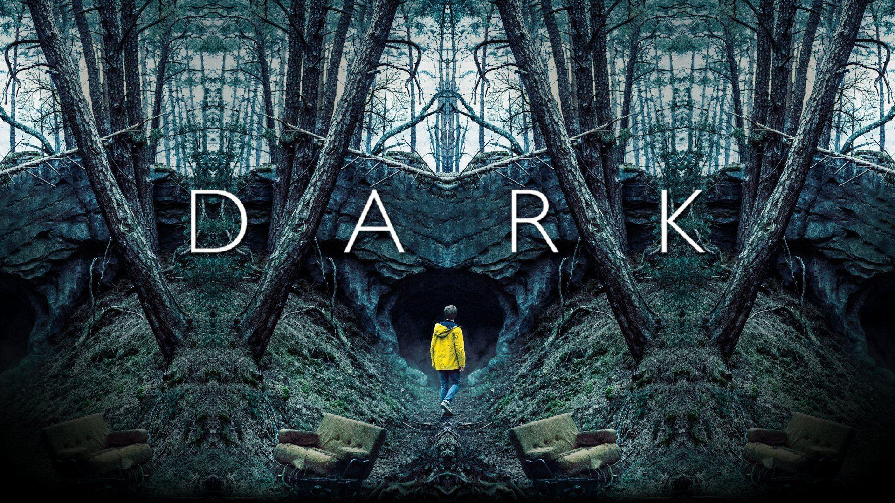
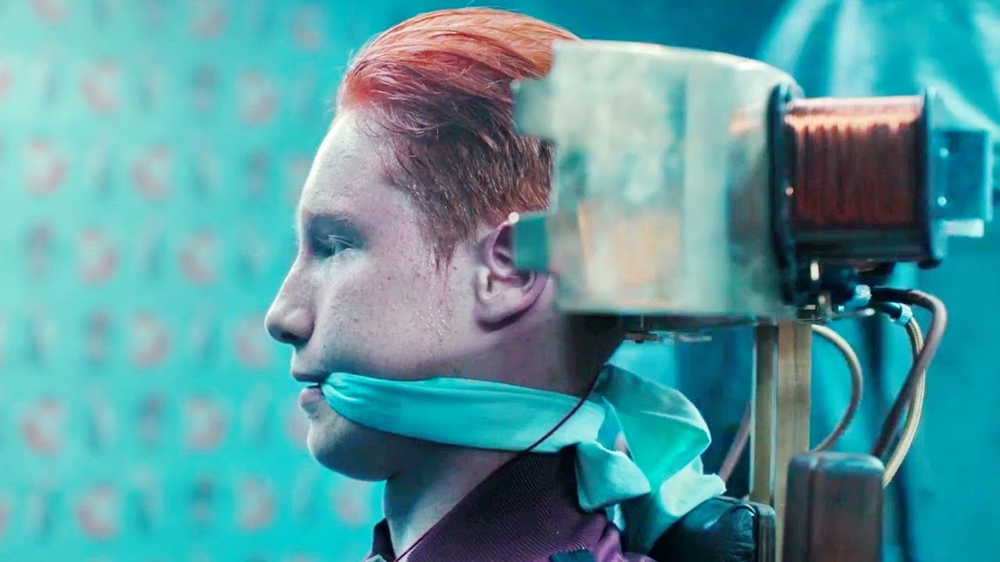
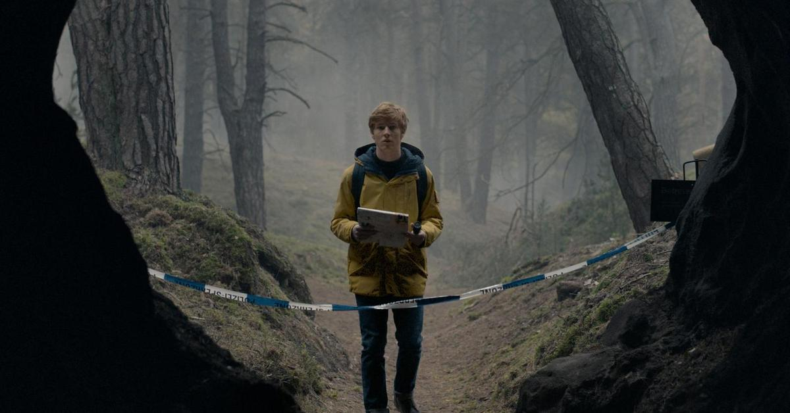

Действие «Тьмы» разворачивается в пяти временных отрезках: 1921, 1953—1954, 1986—1987, 2019—2020 и 2052—2053. Повествование начинается в 2019 году в вымышленном городке с говорящим названием Винден. С немецкого оно переводится как «закручиваться», что подчеркивает цикличность истории и отсылает к глаголу «verschwinden», то есть «исчезнуть» — именно это происходит с несколькими героями «Тьмы».
Город окружен лесом. Высокие прямые деревья шоураннер Баран бо Одар сравнивает с тюремными решетками. Для жителей Винден действительно похож на тюрьму: ни один из них, несмотря на мечты, не уехал в мегаполис. В сериале не показаны общие планы Виндена, чтобы он не ассоциировался с конкретным местом, а зритель сам мог представить обычный немецкий городок. Зато много внимания уделяется отдельным объектам.
Градообразующее предприятие, которое в финале второго сезона становится причиной апокалипсиса. Для создателей сериала основой этого сюжета стали детские воспоминания. После чернобыльской катастрофы они играли на улице под дождем, но испуганные родители завели их в дом. «Это был первый раз, когда у нас отняли детскую наивность. Было чувство, что наступает конец света, мы все умрем», — вспоминает сценаристка Янтье Фризе.
В «Тьме» в 1986 году, спустя несколько недель после чернобыльской катастрофы, на АЭС в Виндене происходит крупная авария. Руководитель станции Бернд Допплер скрывает ее и помещает радиоактивные отходы в желтые бочки. 27 июня 2020 года полицейский Клаузен, одержимый идеей найти пропавшего в 1986 году брата Александра Келера, обыскивает станцию и приказывает открыть одну из бочек. После этого Винден накрывает темная материя.

Принадлежит семейству Допплер. Там в 1986 году священник Ной и его помощник Хельге Допплер создают прототип машины времени. Подопытными становятся дети: Мадс Нильсен (похищен в 1986 году), Ясин Фриз и Эрик Обендорф (похищены в 2019 году). Мальчиков сажают на подобие электрического стула и опускают на голову металлическое кольцо. Дети переносятся во времени, но погибают — с выжженными глазами и лопнувшими барабанными перепонками. В день апокалипсиса бункер превратился в единственное безопасное место.
Находятся рядом с АЭС. В них расположен проход, позволяющий попасть в 1953, 1986 или 2019 годы. Проход был создан в 1921 году молодым священником Ноем и другими участниками Sic Mundus — тайного общества путешественников во времени под предводительством Адама.
Шоураннеры сериала придерживаются теории детерминизма, которая заключается в том, что ход человеческой жизни предопределен судьбой. Герои «Тьмы» застряли в замкнутом круге времени и безуспешно ищут лазейку, чтобы выбраться из него. Этот сюжет отсылает к идее вечного возвращения Ницше — предельной форме нигилизма, не предполагающей свободы выбора.
Ной практически цитирует другого немецкого философа, Артура Шопенгауэра: «Мы никогда не свободны в том, что делаем, потому что не свободны в том, что хотим», — поэтому персонажи вновь совершают одни и те же ошибки. Чтобы разорвать петлю, им нужно найти причину ее возникновения, но это невозможно, потому что, как не раз повторяют герои, «начало — это конец, а конец — это начало», и они приходят к пониманию, что «не у нас есть время, а мы есть у времени».
Несмотря на то, что идея авторов становится понятна еще в первом сезоне, зрители болеют за героев. Сценаристка Янтье Фризе считает, что даже если перед началом сериала сказать: «Это детерминированный мир. Ничего не изменится!» — то зрители будут ждать, что история может сложиться иначе. Она объясняет это тем, что мы все хотим верить, что у нас есть свободная воля.
«Тьма» наполнена отсылками к произведениям искусства, понимание которых делает сюжет еще объемнее. Вот самые важные аллюзии и предметы, которые появились в первых двух сезонах.
Название общества Sic mundus отсылает к цитате «Так был сотворен мир» из «Изумрудной скрижали» — средневекового текста, в котором, по легенде, содержится рецепт получения философского камня.

В школьной постановке, одной из самых запоминающихся сцен первого сезона, Марта играет роль Ариадны — дочери царя Миноса, которая помогла Тесею выбраться из лабиринта Минотавра, дав ему клубок нити. Тесей покинул влюбленную в него Ариадну, потому что не мог ослушаться воли богов.
В «Тьме» Йонас, которого можно сопоставить с Тесеем, в запутанной, как лабиринт, пещере находит путь к порталу с помощью натянутой красной нити, а узнав о родственных связях с Мартой, расстается с ней.
Кельтский символ, названный «узлом троицы», не имеет ни начала, ни конца, его невозможно развязать не разрезая. В сериале трикветр — символ Sic mundus, он изображен на двери портала в пещере, который связывает три времени, и на кожаном блокноте, который есть у Клаудии и Ноя. В нем задокументированы события прошлого и будущего. Ной убил Клаудию ради нескольких страниц, которые отсутствовали у него в блокноте.
Оружие, которое в течение века переходило от одного героя к другому. В 1986 году с ним в Винден приходит молодой Александр Тидеманн. Он прячет пистолет в лесу, его находит Ханна Канвальд и 33 года держит дома. В 2020 году Ханна, у которой умер муж и пропал сын, хочет застрелиться. Ее плану мешает Незнакомец, он забирает пистолет себе и, угрожая им, отправляет Марту в бункер. В 1921 году Ной пытается застрелить Адама, но в итоге из этого пистолета Ноя убивает Агнес. В 2020 году Адам им убивает Марту.
Бозон Хиггса, который также называют «частицей бога», в сериале представлен в виде массы черного вещества, которая позволяет путешествовать во времени. Причиной ее появления, вероятно, стали радиоактивные отходы.